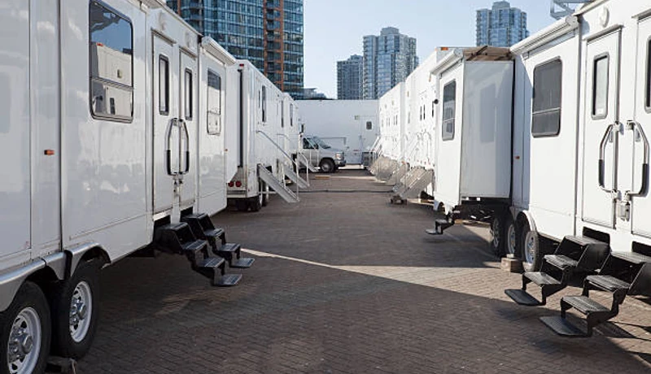

Event Planning
Porta Potty Guide for Coral Springs Festivals
Hosting an event at Mullins Park? Learn exactly how many portable restrooms you need to keep guests happy in the Florida heat.
Whether you need porta potties for a home renovation in Downtown Coral Springs, a neighborhood HOA event in Broward County, or a residential construction project near Coral Springs Center for the Arts, FixPilot is Coral Springs's trusted local provider. Clean units, transparent pricing, and same-day delivery — no automated phone trees, just fast friendly local service.
No forms. No callbacks. Talk to a real dispatcher right now and lock in delivery.
Not sure how many units? Use our free porta potty calculator.
From Parkland down to Sunrise, our local fleet ensures rapid delivery to any zip code.
Every single unit goes through a rigorous multi-point sanitization process before delivery.
Whether you need one unit for a remodel or 50 for a local festival, we have the stock.
We carry comprehensive liability insurance and ensure your site meets Florida health regulations.
From routine Broward County construction porta potties to luxury restroom trailers for Downtown Coral Springs weddings and neighborhood events in Coral Springs, FixPilot brings the full spectrum of portable sanitation to your door. No job too small, no event too big — same-day delivery throughout Broward County and beyond.

Broward County construction porta potties: OSHA 29 CFR 1926.51 compliant, same-day delivery to Downtown Coral Springs and Sawgrass, weekly service included. Coral Springs site supervisors get clean units and zero paperwork hassle.

Upscale restroom trailers for Broward County events from Downtown Coral Springs fundraisers to Sawgrass Mills-area galas. Climate-controlled, beautifully appointed, and delivered same-day to Coral Springs venues.

Budget-friendly Coral Springs standard units delivered same-day to Downtown Coral Springs and Sawgrass in Broward County. Weekly service and OSHA compliance documentation included for all Coral Springs orders.

ADA-accessible porta potties for Coral Springs permitted events and Broward County job sites. Meets ANSI A117.1 accessibility requirements for Meadows public venues and Downtown Coral Springs construction.

Standalone hand wash stations for Coral Springs food events and Broward County construction near Coral Springs Center for the Arts. Fresh water tank, soap, paper towels — essential for Downtown Coral Springs and Sawgrass events.

Recirculating-flush units for Coral Springs weddings and Coral Springs Center for the Arts-area upscale events in Broward County. Real flushing action — the middle option between standard units and full luxury trailers.

Climate-controlled event trailers for Coral Springs festivals and Coral Springs Center for the Arts-area gatherings in Broward County. Multiple stall configurations for crowds from 100 to 5,000+ at Downtown Coral Springs venues.

Designed specifically for multi-story commercial developments. These specialized units feature integrated, heavy-duty steel slings allowing your crane operator to safely hoist sanitation directly to elevated floors, saving time and maximizing site efficiency in Broward County.

Five-star mobile restroom experience for Coral Springs black-tie events near Coral Springs Center for the Arts. Premium flooring, fixtures, and lighting make this the obvious choice for Downtown Coral Springs and Sawgrass upscale events.

Upgraded Coral Springs units with interior lighting, larger tanks, and improved ventilation. A step above standard — ideal for Downtown Coral Springs events and multi-week Broward County construction projects.

Portable septic pumping for Broward County residential properties, Coral Springs event sites, and Meadows construction projects. Same-day emergency service — call (833) 652-9344.

Same-day emergency rentals for Coral Springs — available 24/7 for Downtown Coral Springs, Sawgrass, and all of Broward County. Call (833) 652-9344 any time; our Coral Springs dispatcher answers live and confirms delivery.
Not sure what your site needs? Use this quick comparison guide to find the perfect sanitation solution for your guest count and event type in Coral Springs.
| Unit Type | Best For | Key Features | Capacity (Approx) |
|---|---|---|---|
| Standard Porta Potty | Construction, Casual Events, Parks | Ventilated, Urinal, Hand Sanitizer | 1 per 10 workers / 50 guests |
| Flushable VIP Unit | Corporate Picnics, Backyards | Foot-pump flush, Hidden Waste, Sink | 1 per 40 guests |
| ADA Compliant Unit | Public Festivals, Code Compliance | Ground level access, Grab bars, Oversized | Required 1 per 20 std. units |
| Luxury Trailer (2-10 Stalls) | Weddings, VIP Areas, Film Sets | A/C, Running Water, Porcelain Toilets, Lights | 150 - 800+ guests |
Heavy-duty construction units for Coral Springs job sites — serving Downtown Coral Springs, Sawgrass, and remote Broward County work sites. OSHA documentation provided on request. Same-day delivery available.
Call for Expert Sizing →Navigating Broward County regulations is critical to avoid fines and project delays. Our logistics team handles the placement strategy to keep your site 100% legal.

We believe in transparent, upfront pricing with zero hidden fees. While exact costs fluctuate based on inventory and season, your rental price in Broward County is determined by three main factors:
A standard event unit is our most affordable option, while multi-stall luxury AC trailers command a premium. Bulk orders for large sites receive scaled pricing.
Event units are typically billed on a flat weekend rate. Construction rentals in Coral Springs are billed on a recurring 28-day cycle.
One cleaning per week is standard. For high-traffic sites where adding more units isn't physically possible, we can schedule twice-weekly or daily pumping.
Want an exact number for your project?
Call our local dispatchers. It takes less than 2 minutes to get a binding quote.
Call →
Florida's outdoor event season runs opposite to the rest of the country. Here is our recommended timeline to secure inventory during peak months.
Jan - May. Book 4-6 weeks in advance. This is peak wedding and festival season in Coral Springs. Luxury trailers sell out fast.
June - Sept. Book 1-2 weeks in advance. Availability is high, but secure tie-down protocols are mandatory.
Oct - Dec. Book 2-3 weeks in advance. Weather cools down and outdoor construction projects ramp up.
The biggest fear of renting a porta potty is the mess and the smell, especially in the Florida heat. We eliminate that completely. Our Coral Springs technicians follow a strict 4-point protocol.
Using high-powered vacuum trucks, we completely pump out all waste and transport it to approved Broward County wastewater facilities.
All interior surfaces—walls, floors, urinals, and seats—are cleared of debris and vigorously scrubbed to remove dirt and grime.
We apply industrial-grade disinfectants. We then recharge the tank with a specialized blue deodorizing solution engineered to withstand Florida heat.
We fully replenish all consumables, including high-capacity 2-ply toilet paper rolls and hand sanitizer dispensers, ensuring the unit is ready for use.
Coral Springs is a dynamic Broward County community where construction activity, outdoor events, and residential growth create year-round demand for reliable portable sanitation. From the corridors near Coral Springs Center for the Arts to the neighborhoods of Downtown Coral Springs, Sawgrass, and Meadows, every part of Broward County has a reason to call FixPilot — construction sites, events, or emergency backup near Sawgrass Mills.
Our Coral Springs depot enables rapid same-day delivery to Downtown Coral Springs and all of Broward County.
Construction and event delivery to Sawgrass — same-day available throughout Broward County.
Serving Meadows residential and commercial projects with OSHA-certified units.
Luxury restroom trailers and standard units for events and construction in Ramblewood.
Same-day delivery to Boca Raton and all surrounding Broward County communities.
Serving contractors and event planners in Parkland and throughout Broward County.
Reliable porta potty service to Coconut Creek, Downtown Coral Springs, and all of Broward County.
We also provide fast, reliable service to contractors and residents in these nearby Broward County communities:
*Prices may vary by duration and location in Broward County. Call for exact quote.
Get Your Free Coral Springs Quote2026 Rental Cost Guide
Standard, deluxe & luxury pricing explained
How Many Units Do You Need?
Calculate the right number for your event or site
OSHA Compliance Guide
Requirements for construction sites
Construction Site Services
OSHA-compliant units for job sites
Luxury Restroom Trailers
VIP-grade trailers for weddings & events
Free Quote Calculator
Get an instant estimate in 60 seconds
Coral Springs's Broward County portable sanitation market spans construction corridors, event venues, and a residential base that keeps our Coral Springs fleet active year-round. The Downtown Coral Springs and Sawgrass zones carry the heaviest construction load — commercial mixed-use developments, residential subdivisions extending into Meadows and Ramblewood, and infrastructure projects throughout Broward County. FixPilot serves Broward County construction job sites with OSHA-certified units delivered on schedule to every active project.
The event circuit near Sawgrass Mills and throughout Broward County generates premium sanitation demand from Coral Springs's outdoor wedding market, corporate event producers, and public festival organizers. Venues in Downtown Coral Springs, private estates in Sawgrass, and outdoor spaces near Coral Springs Center for the Arts book luxury restroom trailers as standard equipment — facilities that match Coral Springs's growing expectation for event-quality restrooms. Our Broward County luxury trailer inventory is sized for Coral Springs's event volume, not just the peak weekends.
Meadows, Ramblewood, and Boca Raton contribute the residential layer beneath Coral Springs's commercial and event markets. Homeowners in these Broward County neighborhoods managing renovations, contractors building new Coral Springs subdivisions, and small event organizers running community gatherings near Sawgrass Mills make up the steady background demand. FixPilot's Coral Springs depot is sized for this full spectrum — same-day delivery to Downtown Coral Springs construction, weekend luxury trailer service at Sawgrass weddings, and weekday residential rentals in Ramblewood and Boca Raton.
Coral Springs's Broward County construction market is driven primarily by residential construction, community events, and commercial development centered around Coral Springs Center for the Arts and extending throughout the Downtown Coral Springs and Sawgrass development corridors. Active job sites in Meadows and Ramblewood keep a consistent contractor workforce active in Broward County year-round, generating steady demand for OSHA-compliant portable restrooms with documented weekly service schedules. FixPilot maintains dedicated Broward County inventory to serve same-day construction deliveries to Downtown Coral Springs, Sawgrass, and every active construction zone in the Coral Springs metro. The Coral Springs Center for the Arts corridor represents the highest-demand construction zone in Broward County, where projects range from commercial mixed-use development to infrastructure upgrades along the Boca Raton perimeter.
Coral Springs's event market is anchored by annual gatherings near Sawgrass Mills and throughout the Downtown Coral Springs and Meadows entertainment corridors in Broward County. The seasonal event calendar — outdoor concerts, community festivals, weddings at venues near Coral Springs Center for the Arts, and Broward County civic gatherings — creates consistent premium portable sanitation demand from spring through fall. Luxury restroom trailers for upscale Sawgrass and Ramblewood event venues, standard units for large Broward County community gatherings, and ADA-compliant options for public events near Sawgrass Mills are all part of FixPilot's Coral Springs event service offering. The growing outdoor wedding venue market in Boca Raton and Meadows reflects Coral Springs's emergence as a destination for outdoor celebrations throughout Broward County.
Contractors working in Downtown Coral Springs, event planners organizing gatherings near Sawgrass Mills, and homeowners in Ramblewood and Boca Raton managing Coral Springs renovation projects choose FixPilot over competitors because our Broward County-based operation delivers local expertise that national vendors cannot provide. We know the delivery windows, access requirements, and permit procedures for construction sites near Coral Springs Center for the Arts and throughout the Sawgrass development corridor. Our Broward County dispatch team answers every call — no automated systems, no call centers routing your Coral Springs order through another state. Same-day delivery is standard, not a premium, for all of Broward County.
Crucial guides for event planning, hurricane preparedness, and construction compliance in Broward County.
Hosting an event at Mullins Park? Learn exactly how many portable restrooms you need to keep guests happy in the Florida heat.

Keep your residential construction site safe. We break down the exact protocols for securing porta potties before a tropical storm hits.

Planning an elegant outdoor wedding near Parkland? See why climate-controlled luxury trailers provide the ultimate comfort.

Avoid fines on your commercial build. Learn exactly what OSHA demands for handwashing stations and sanitation capacity in Broward County.
Porta Potty Rental in Fort Lauderdale
Learn More →Porta Potty Rental in Pembroke Pines
Learn More →Porta Potty Rental in Miami Gardens
Learn More →Porta Potty Rental in Fort Lauderdale
Learn More →Porta Potty Rental in Pembroke Pines
Learn More →Porta Potty Rental in Miami Gardens
Learn More →Real feedback from contractors, event planners, and homeowners across Broward County.
"We needed several OSHA-compliant units for a major roof replacement in Ramblewood. The team delivered exactly on time and their weekly cleanings were incredibly thorough."
Miguel R.
General Contractor
"We rented a luxury trailer for a large outdoor gathering in Heron Bay. It was beautifully maintained, smelled fresh, and the air conditioning kept all our guests perfectly cool."
Stephanie C.
Event Planner
"Rented two standard porta potties and a hand wash station for a sports event at Mullins Park. The units were spotless upon delivery. Excellent customer service."
David W.
League Coordinator
Real answers for Coral Springs customers. More questions? Call (833) 652-9344 anytime.
Same-day delivery to Broward County is standard — not a premium service. Our Coral Springs depot dispatches to Downtown Coral Springs, Sawgrass, Meadows, Ramblewood, and Boca Raton daily. Orders placed before 2 PM in Coral Springs arrive the same day. For emergency needs near Coral Springs Center for the Arts or in Boca Raton, call (833) 652-9344 and we'll confirm a delivery window for your Broward County location immediately.
Yes — every Coral Springs neighborhood is on our regular delivery route: Downtown Coral Springs, Sawgrass, Meadows, Ramblewood, Boca Raton, and all communities in between across Broward County. We've never declined a Coral Springs-area order for location. Call (833) 652-9344 with your Broward County address and we'll confirm same-day availability.
All FixPilot units at Coral Springs job sites meet OSHA 29 CFR 1926.51 — one unit per 20 workers per 8-hour shift, positioned within 600 feet of the work area, serviced on schedule. We deliver an OSHA compliance spec sheet with every Broward County construction order. Your Downtown Coral Springs or Sawgrass job site will pass inspection without scrambling for paperwork.
In Broward County, standard porta potties run $75–100/day with weekly service. Upgraded deluxe units are $100–150/day. ADA-compliant units for Coral Springs public events cost $120–160/day. Luxury restroom trailers for events near Coral Springs Center for the Arts or Sawgrass Mills start at $400/day. Multi-week Broward County construction contracts qualify for volume discounts. Call (833) 652-9344 for a precise Coral Springs project quote.
National chains route Broward County orders through centralized dispatch — meaning the person confirming your Coral Springs delivery has never driven Downtown Coral Springs or navigated Sawgrass's access restrictions. FixPilot has its own drivers in Broward County who run Coral Springs routes daily. Our units leave our Broward County facility clean and arrive on time. That local difference shows in every delivery, every week.
For Coral Springs neighborhood events in Downtown Coral Springs, Sawgrass, and throughout Broward County, standard porta potties work well for casual gatherings of up to 200 people. Deluxe units with interior lighting and improved ventilation are a step up for Meadows and Ramblewood HOA events and outdoor fundraisers. Our Broward County team recommends the right unit count based on your Coral Springs event's expected attendance.
Extensions for Broward County rentals are simple — just call (833) 652-9344 and we'll add days or weeks with no penalty. Our Coral Springs service team continues weekly pump-outs at the same rate, and you're billed only for the additional time. We've extended Downtown Coral Springs and Sawgrass construction rentals from 2 weeks to 6 months without any contract complication.
Yes — neighborhood block parties, HOA events, school carnivals, and community festivals in Downtown Coral Springs, Sawgrass, Meadows, Ramblewood, and Boca Raton are regular orders for our Coral Springs team. No minimum order size, no event-planning complexity. One call to (833) 652-9344 and your Broward County community event has clean, properly maintained portable restrooms delivered and retrieved on your schedule.
Yes — homeowner rentals in Coral Springs are one of our most common orders. A single standard unit placed on your Downtown Coral Springs or Sawgrass driveway keeps your construction crew out of your home's bathrooms during kitchen remodels, bathroom renovations, or additions in Broward County. Minimum one week; most Coral Springs homeowners rent 3–6 weeks. Same-day delivery available throughout Broward County.
For private property in Coral Springs — Downtown Coral Springs driveways, Sawgrass yards, fenced Broward County construction sites — no permit is required. For placement on public Coral Springs streets, Meadows sidewalks, or Broward County park property, a right-of-way permit from Coral Springs Public Works is required (typically 3–7 days). We guide Broward County homeowners and contractors through the process.
Yes — projects and events near Coral Springs Center for the Arts are among our most regular Broward County deliveries. Our Coral Springs drivers know the delivery windows, vehicle access requirements, and site coordination protocols for the Coral Springs Center for the Arts area. Same-day delivery is standard for Broward County locations near Coral Springs Center for the Arts across Downtown Coral Springs and Sawgrass. Call (833) 652-9344 for immediate availability confirmation.
Sawgrass Mills and the surrounding Meadows corridor are a regular part of our Coral Springs service calendar. We've provided construction porta potties and luxury restroom trailers for events ranging from small private gatherings to large public events near Sawgrass Mills in Broward County. Delivery timing, access coordination, and permit guidance for Sawgrass Mills-area projects are handled by our Coral Springs team.
Our Coral Springs emergency line (833) 652-9344 is answered live 24/7 — including nights, weekends, and holidays. Our Broward County on-call driver covers Downtown Coral Springs, Sawgrass, Meadows, and the full Coral Springs metro for after-hours emergencies. Whether it's a Coral Springs Center for the Arts-area construction inspection failure or a last-minute event backup in Ramblewood, we dispatch immediately with no premium for after-hours service.